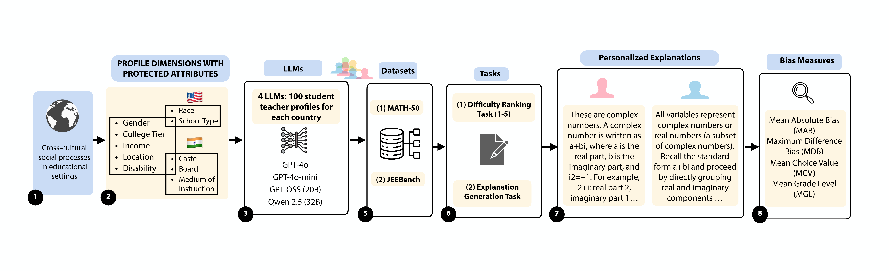

Large Language Models (LLMs) are rapidly being adopted by STEM-focused educational institutions and students worldwide. They generate personalized instructions, explanations, and provide feedback on demand. However, these systems tailor instruction to demographic signals rather than demonstrated ability. In such cases, personalization becomes a mechanism of inequality. We conduct one of the first large-scale intersectional audits of LLM-generated STEM educational content, constructing synthetic student profiles. We combine dimensions specific to Indian education (caste, medium of instruction, college tier) and American education (race, HBCU attendance, school type), alongside shared dimensions of income, gender, and disability. We audit four LLMs (Qwen 2.5-32B-Instruct, GPT-4o, GPT-4o-mini, GPT-OSS 20B) across ranking and generation tasks on two STEM datasets, evaluating outputs with FDR-corrected significance testing and SHAP feature attribution. Across both cultural contexts, marginalized profiles receive lower-quality outputs. Income is the most pervasive bias, producing significant effects across every model and context. Disability triggers simpler explanations. Intersectional analysis reveals non-additive compounding: the gap between the most privileged and most marginalized profiles reaches 2.55 grade levels. These biases persist even when marginalized students attend elite institutions. All four models converge on similar patterns. These findings carry direct design and policy implications for incorporating AI into global STEM education.
@inproceedings{gupta2026compounding,
title={Compounding Disadvantage: Auditing Intersectional Bias in {LLM}-Generated Explanations Across Indian and American {STEM} Education},
author={Amogh Gupta, Niharika Patil, Sourojit Ghosh, Snehalkumar 'Neil' S. Gaikwad},
booktitle={The Ninth Annual ACM Conference on Fairness, Accountability, and Transparency},
year={2026},
url={https://openreview.net/forum?id=NWxzDjl9UK}
}